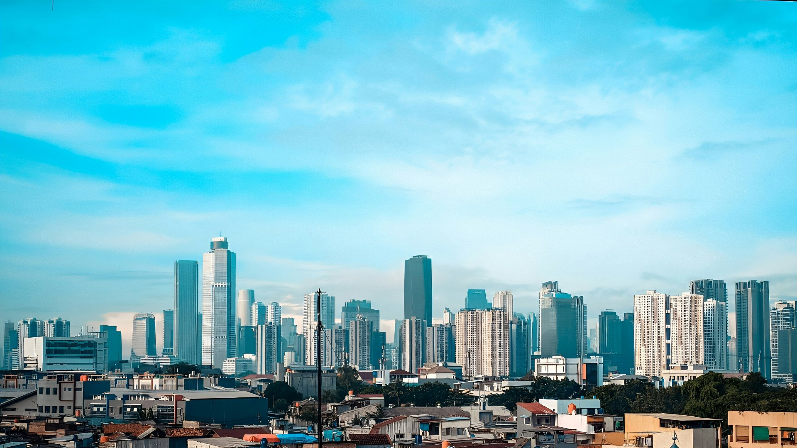
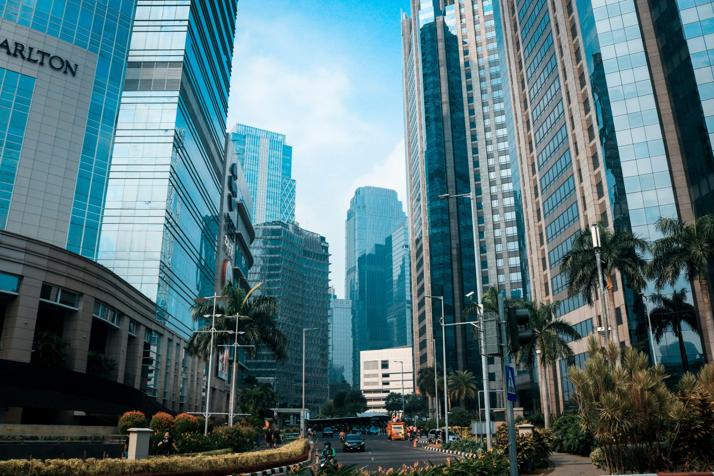

Kota ini
bukan
satu warna.
This city is not one colour. Jakarta is forty-four districts that agreed to share a skyline — so the identity is drawn from where they meet: a line that turns a corner, and the stop where it turns.
01 Konteks & riset
Sepuluh juta orang,
satu cakrawala.
Jakarta is not a city with a centre. It is a set of centres that learned to share a horizon — the port, the palace, the market, the tower, the terminal.
Any identity that begins with a monument begins by choosing one of them. This one begins at the junction instead: the place where a route turns and a stop is made. That is the only shape all forty-four districts have in common.
The junction, not the monument
Every element is a meeting of two things: a route and a stop, a district and the map, the old port and the new tower. Nothing in the system stands alone, and nothing is the hero.
Legible in the rain
Jakarta's weather, traffic and power are unreliable. The identity is not. Solid fills, no gradients that break, no hairline type, no effect that needs a fast connection.
Nine colours, one grid
The palette is the city's own place names. No district's colour is the accent of another; each is a ground the others can sit on. Difference is the structure, not the decoration.
Built to be rebuilt
Tokens, not artwork. Everything the city makes next — a sign, an app, a bus — should be assemblable from the same parts by someone who has never met the designer.
Cultural motif — four landmarks, four arguments
Monas · Gambir
The obelisk and the plaza. Used as a plan, not a silhouette: the plaza is a grid, and the grid is what the system borrows.
Kota Tua · Pinangsia
Dutch masonry, Chinese shophouses, a canal. Heritage enters as colour and material — enamel, painted steel — never as an engraved ornament.
Bundaran HI · SCBD
The roundabout and the towers. The skyline is vertical and lit; the system answers with a stroke that turns, not with a skyline icon.
TransJakarta · MRT
Five modes, one fare card, one set of numbers. The most collaborative thing the city already owns — and the closest thing it has to a native visual language.
02 Strategi & cerita
Satu suara,
tanpa mengecilkan.
Give a city of ten million one voice that does not require them to lower theirs.
Rejection test. If the mark could belong to any city with a monument, it is not Jakarta's.
A city is an agreement, not a skyline.
Jakarta works because ten million people negotiate it every morning. The identity should look like that negotiation, not like its result.
One line turns. One stop is made.
The stroke is one width throughout. The stop is larger than the line, because a stop is not a smaller thing than a route — it is where the route becomes useful.
Enamel, vinyl, powder coat.
A sign at a bus shelter, a wrap on a Mikrotrans, a card in a pocket. Every decision here is tested against a surface that will be rained on.
Voice — four rules, with the sentence each one forbids
“Selamat pagi, Jakarta. Bus pertama 04.30.”
“PERHATIAN: WARGA NEGARA DIHIMBAU UNTUK…”
Shouting is not authority.
“Bus 1A arrives in 4 minutes.”
“Informasi kedatangan bus akan disampaikan.”
Never announce the announcement.
“Warga Jakarta” — 10,6 juta orang, satu kata.
“Penduduk tetap ber-KTP DKI”
A card is not a citizen.
State the number, then the source, then the date.
“Sesuai kebijakan yang berlaku.”
A policy is not an answer.
Four decisions, and what each one costs
The palette is a map, not a mood
Because the nine ramps already carry Jakarta place names. Not when a campaign needs a colour that means nothing — then it borrows a district and says which. Breaks next if someone adds a tenth colour without a place to name it after.
One stroke, everywhere
Because a single measure is what makes a system legible at 16px and at eight metres. Not when the medium is a screen at 390px — then the compact drawing is used, not a thinner stroke. Breaks next if a weight is invented for “emphasis”.
No gradients, no shadows on type
Because the system is printed on vinyl that fades and screens that are dimmed outdoors. Not when a photograph needs a scrim — that is a photograph, not a brand element. Breaks next the first time someone adds a “depth” to a card.
District colours are grounds, not inks
Because six of the nine measure under 4,5:1 on paper. Not when the type is 24px or larger, where 3:1 applies and they pass. Breaks next if a slide deck sets 14px body copy in Kebayoran yellow.
The enemy
The template.
Every one of Indonesia's 514 kabupaten and kota has a logo built the same way: a Monas or a mosque silhouette, a blue-to-green gradient, a ribbon, a stock photograph of a smiling family. It is not that the template is ugly. It is that the template is an argument that nowhere is anywhere. Jakarta's identity has to be the one that could not be swapped into another city's letterhead without anyone noticing.
03 Fondasi
Sembilan distrik,
satu kisi.
Nine ramps, four steps each, named after the places they were taken from. Click any swatch to copy its hex.
--jk-accent. That is the whole reason the night scope works without a second palette.
The ink test — every district colour set as 16px text on paper
computed, not estimated
Warga Jakarta, selamat pagi.
24px+
Langit · 7,89:1 — Passes 4,5:1
Warga Jakarta, selamat pagi.
24px+
Laut · 3,41:1 — Large text only
Warga Jakarta, selamat pagi.
24px+
Merah · 3,40:1 — Large text only
Warga Jakarta, selamat pagi.
24px+
Senja · 3,24:1 — Large text only
Warga Jakarta, selamat pagi.
24px+
Aspal · 10,64:1 — Passes 4,5:1
Warga Jakarta, selamat pagi.
24px+
Terang · 1,32:1 — Invisible — surface only
Warga Jakarta, selamat pagi.
24px+
Menteng · 3,08:1 — Large text only
Warga Jakarta, selamat pagi.
24px+
Sinar · 3,04:1 — Large text only
Warga Jakarta, selamat pagi.
24px+
Doger · 1,99:1 — Invisible — surface only
Type scale — Plus Jakarta Sans, variable, 200–800
Spacing — 4px base, twelve steps
Radius — one curve in the system, and it belongs to the mark
The default is 0. A civic sign has a square corner because it is cut from a sheet, and the identity already owns exactly one curve — the 2:1 corner of the mark. Radii above 0 are for screens only.
Elevation — three, all tinted with Aspal, never black
04 Tanda
Satu garis
yang berbelok.
650 × 576 · the clear space is part of the file
The mark is one line that turns a corner, and one stop where it turns. It is a J because the city's name begins there; it is a junction because the city's argument begins there.
- 1 · 1SThe stroke, everywhere. Every other measure in the family is a multiple of it.
- 2 · 2SThe outer corner. The inner corner is 1S, so the bend is drawn from the same measure as the line.
- 1,38 · stopWider than the line, because a stop is not a smaller thing than a route.
- 0,62 · gapThe air between the line and the stop. It is the first thing to close at small sizes — which is why the compact drawing exists.
- 0 · monumentThere is no landmark in it. A monument would have been a picture of one district standing for forty-four.
Minimum size — compact below 24px, glyph below 16px
Background pairing — decided by measurement, not taste
Ink on paper measures 14,8:1 and ink on Kebayoran yellow 10,4:1, so the black mark is used on both. White is used on Senja (3,56:1 against the field) and on Langit (8,66:1). White on orange is a graphics-only pair — it passes 3:1 and fails 4,5:1, so the mark may sit there but 14px text may not.
Incorrect usage — six ways to lose the argument
Lockup — cap height 0,72 × the mark's height, gap 1,6S
05 Fotografi & latar
Kota ini
difoto dari atas.
Five photographs, one rule: the city is shown as a system, never as a postcard.
No eye-level crowd shots, no stock smiling. Elevation, repetition and infrastructure — the subjects that already look like the mark. Every image is credited; none is recoloured except through the two approved treatments.


Overlay
Three scrims only: 0% for a full-colour plate with no type, 35% for a caption on a bright sky, 62% for display type. The scrim is always neutral ink (#080C10) — never a brand colour, which would tint the city.
Crop
Horizon at 62% of the frame, subject on the left third, sky kept above. Never crop a landmark mid-shaft — Monas loses its argument at the shoulders. For a 1:1 tile, crop to the density, not to the skyline.
The 1:1 tiles above are cropped from the same frame the hero uses, so a page can mix them without two lighting temperatures.
Duotone
One duotone, computed with a luminance matrix rather than a colour overlay: shadow #20262C, highlight #FF9275. It is the only approved recolouring, and it is applied by filter so the source file is never baked.
The poster treatment adds a computed 4×4 Bayer matrix at 22% — the halftone a Risograph would give you, without the Risograph.
Photography supplied for this system, credited to the Unsplash contributors named in the file list. The brief describes one asset as “Kota Tua heritage”; the file supplied is a daytime skyline. It is captioned here by what it actually shows. See the audit.
06 Aplikasi
Di layar,
di jalan,
di saku.
TransJakarta · 1A
4 min
Lapor warga
Jalan berlubang, Jl. Sabang
One screen, three modes, one accent. The dark card is the answer to “when”; the orange card is the answer to “what do I do”; the white card is reference. Colour carries hierarchy, so the type does not have to shout.
The nine district colours appear once, as the card's edge. It is the whole palette, at 3mm, doing the only job it can do at that size: identifying the city without a word of type.
Kota
Square panel, one arrow, one accent. The stop badge becomes the route number; the district band becomes the corridor stripe. Nothing on the sign is decoration.
The livery is the system at its most public: paper body, ink windows, one orange band, and the palette running under it as a nine-part stripe. At speed, the stripe is the only part a pedestrian will register — which is why it carries the whole palette and no type.
07 Token
Yang dipakai,
bukan yang digambar.
Three layers, always. A primitive is a place and never changes between scopes; a semantic role is a job; a component token is the only place a button knows its colour. The night scope swaps layer two and nothing else.
The night scope. Same primitives, different jobs — which is what makes it a scope and not a second palette that drifts.
08 Audit
Yang terbukti,
dan yang belum.
Fourteen checks. Each one is a command or a measurement, not an opinion. Three of them do not pass, and one of those is the reason the palette works at all.
| Check | Result | Evidence |
|---|---|---|
| Mark redrawn, not traced | Pass | The supplied 6000 × 5008 bitmap and the SVG are rasterised at 600 × 501 and compared: 0,989 IoU, 768 px of surplus in the original and 473 in the redraw, all antialiasing. scripts/verify-mark.mjs |
| Mark at 32px | Pass | The hook, the 2:1 corner and the stop all resolve on paper, on ink and on Senja. Checked at 96, 48, 32 and 24px on the real grounds. |
| Compact at 16px | Partial | The compact is a separate drawing — 0,78S stop, 0,44S gap, no clear space — and it holds at 16 and 24: 0,918 IoU against the primary's 0,989, and the difference is the redesign. It keeps two shapes, so the gate's “fewer shapes than the primary” rule is not met. The one-shape drawing in this family is the glyph, and the glyph is what actually ships at 16px. |
| Wordmark | Pass | Outlined from the variable TTF at wght 800 with −0,045em tracking. No <text> element in any file in brand/. |
| Contrast — light | Partial | 14 semantic pairs computed: 8 pass, 6 fail. The failures are the district colours used as text — Senja 3,24:1, Laut 3,41:1, Daun 3,08:1, Menteng 3,40:1, Ancol 3,04:1, Doger 1,99:1, Kebayoran 1,32:1. Published, with the job each one is therefore not allowed to do. |
| Contrast — night | Pass | 14 pairs, 13 pass. The one failure is Langit-300 used as a label on Malam-100 at 4,23:1 — large text only. |
| Font registered | Pass | Plus Jakarta Sans, variable, wght 200–800, latin subset, 27 kB, embedded as base64 and applied to body. The page renders identically with the network off. |
| Reduced motion | Pass | Durations collapse to 0ms, the reveal is applied immediately, image hover transforms are removed. The still frame is the finished composition, not a frozen one. |
| 390 and 1440 | Pass | Single column at 390, no horizontal scroll — scrollWidth − clientWidth = 0, measured at both widths. Rail hidden below 1320. Tables reflow to stacked rows. |
| Night scope | Pass | html[data-jk="night"] swaps the semantic layer only. All 46 primitives are identical in both scopes; nothing is mode-prefixed. |
| Figma export | Pass | figma-smoke.mjs exits 0: 6 pages, 87 variables, 11 text styles, 10 components. 87 = 46 primitives + 21 semantic + 12 space + 5 radius + 3 motion, exactly. |
| Photography brief vs assets | Partial | The brief assigns one supplied file to “Kota Tua heritage”. The file is a daytime skyline over kampung rooftops. Captioned by content; the heritage slot is unfilled. |
| Print proof | Open | No pull on enamel or vinyl. No CMYK conversion tested. Senja at 3,24:1 is a screen measurement. |
| Audience testing | Open | No resident, driver or district officer has seen this. Every claim about clarity is a hypothesis. |
Named gaps — what this system does not have
- No citizen has seen it. The palette is the client's; the argument is a designer's. Nothing here has been tested with a resident, a driver, or a district officer.
- No print proof. Enamel and vinyl behave differently from a screen. Senja at 3,24:1 on paper is a screen figure; on a matte vinyl in afternoon sun it will be worse.
- No Pegon or Arabic script support. Plus Jakarta Sans covers Latin only. A Jakarta identity that cannot set a street name in Pegon is incomplete, and this one cannot.
- No motion identity. The durations exist; a signature transition does not. That is a deliberate omission, not a finished decision.
- No accessibility review by a person who uses it. Contrast is computed; wayfinding under glare, at 1,4 m, by someone with low vision, is not.
- The .fig is not in the repo. The plugin source and the generated code.js are; the compiled file needs a Figma session to exist. The plugin is the working export.
- The export ships substitute TTFs beside the real one. The headless rasteriser cannot install a font, so design/figma/jakarta/fonts/ holds Arial, Georgia and Andale Mono next to PlusJakartaSans.ttf. The plugin names the real family and will use it wherever Plus Jakarta Sans is installed.
What would have to be true for this to ship
- 01A physical proofThe mark at 24px, printed on enamel, photographed in daylight. Not a screen render of a print.
- 02A reading testThe type scale read at 1,4 metres, by people who are not designers, under afternoon glare.
- 03One rebuilt posterA district office rebuilding a poster from the tokens — without help, and without calling us.
If those three pass, the system is real. Until then it is a very well-argued proposal, which is what a design system is before it meets a bus shelter.
Every number on this page is produced by a script in jakarta/scripts/ and stored in jakarta/docs/. Nothing is typed by hand.